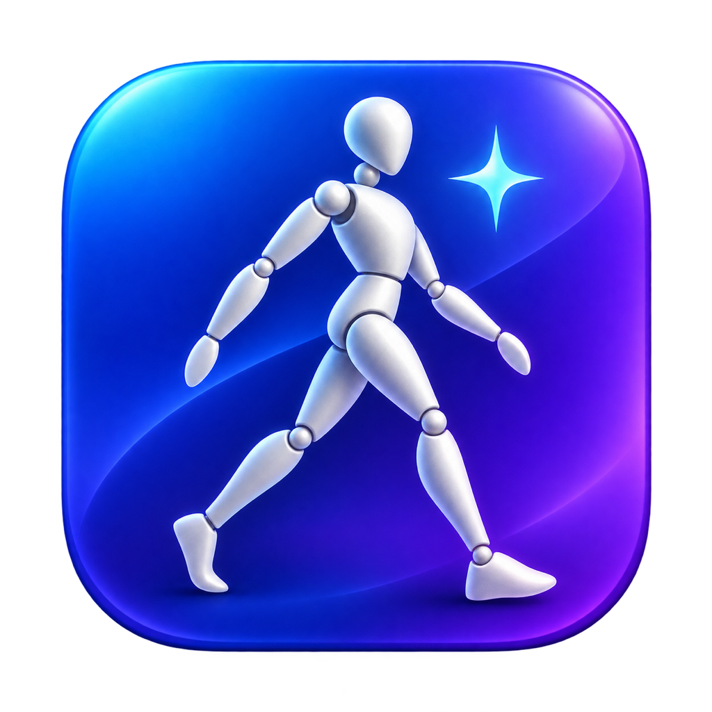

在左侧输入提示词并点击「生成图像」。人物形态、人脸和服饰，都可以作为参考输入。
正在处理…
生成图片会自动保存到右侧历史；滚轮缩放，拖动图片平移。
主题切换立即生效，并在本机保存。
Base URL：https://zenmux.ai/api/v1 · Vertex AI：https://zenmux.ai/api/vertex-ai
测试输入框中的 Key；留空使用已保存 Key。默认文字模型：openai/gpt-6.1-sol；默认生图模型：openai/gpt-image-2.5-flare。实际生成一张无参考图的测试图片，会产生调用费用。
本地 Qwen-Image-2.1 Turbo 使用 UC 主模型、Heretic 文本编码器、指定 LoRA 和 VAE。推荐 Heretic W4A8（约 5.88 GiB），Apple Silicon 实机已验证文生图与参考图编辑；选择并下载权重后即可运行。固定 4 步、CFG 1、Euler、Simple、空负面提示词。
权重由你在此选择和下载，保存在本机应用数据目录；按 Hugging Face 仓库版本及 SHA-256 校验，支持断点续传。镜像不可用时尝试原站。
本地 AI：正在检查运行环境与权重…
本地生图服务：尚未启动
可修改名称、接口、是否支持参考图与参考图上限。未核实的模型请先验证平台支持情况。
尚未生成图片。
拆层方案从上到下排列。文字、文字底板、主体、背景分开；色块、卡片、横幅独立成层。PSD 中的文字为像素层。